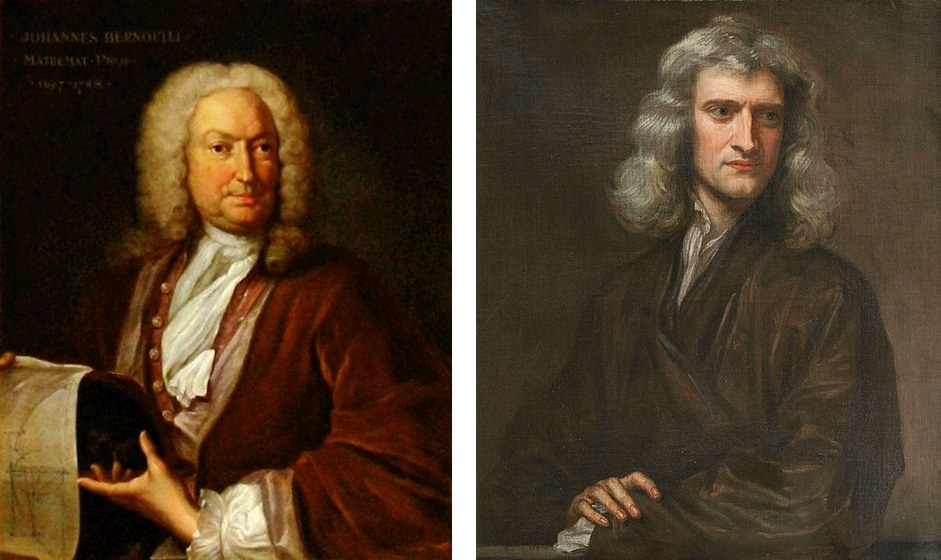
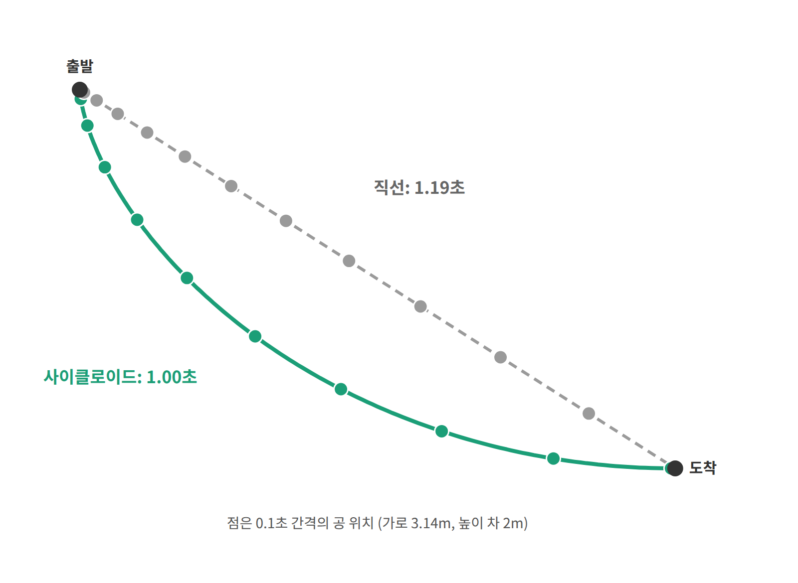
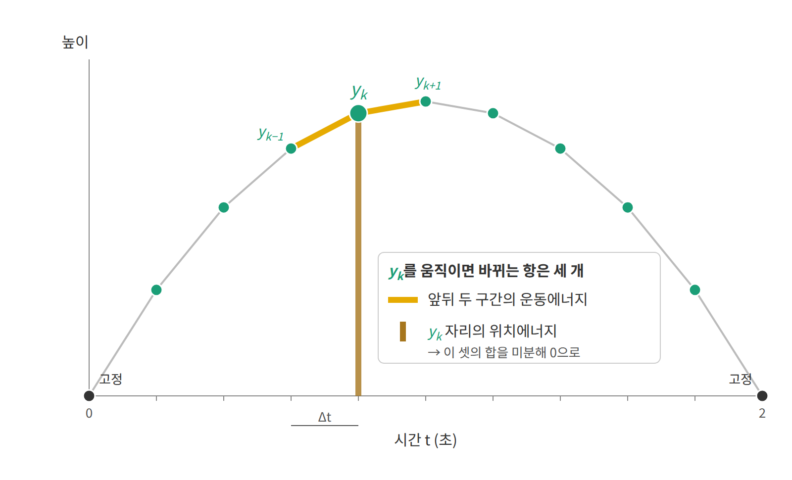
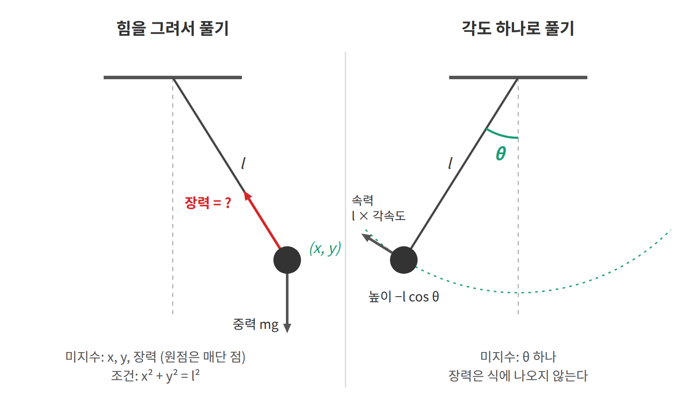
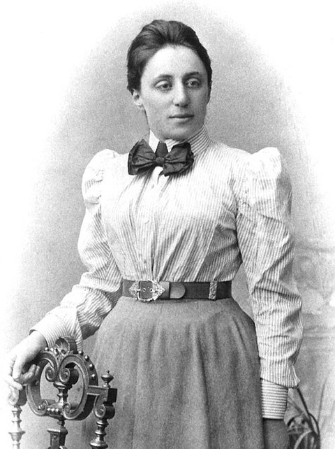
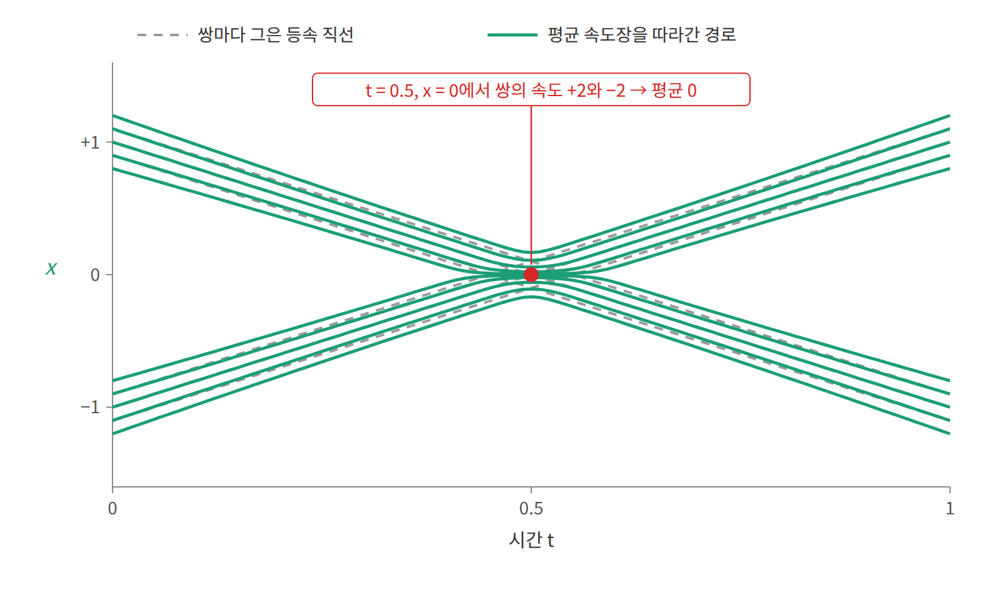

4장 — 라그랑지안과 최소 작용 원리
이 장의 물음
물체의 움직임을 설명하는 방법은 하나가 아니다. 첫째는 익숙한 방법으로, 매 순간 물체에 작용하는 힘을 구하고 그 힘으로 다음 순간의 위치를 정해 나간다. 뉴턴의 운동 법칙이 이런 방식이다.
둘째 방법은 경로 전체를 한꺼번에 본다. 위로 던진 공이 출발점에서 도착점까지 가는 경로는 여러 가지로 상상할 수 있다. 실제로 공이 그리는 포물선도 있고, 곧게 올라갔다 곧게 내려오는 경로나 중간에 잠시 멈추는 경로도 있다. 이런 경로 하나하나에 숫자 하나를 계산해 붙인다고 하자. 이 장에서는 그 숫자를 경로의 점수라고 부른다. 계산 방법은 뒤에서 정하는데(각 순간의 운동에너지에서 위치에너지를 뺀 값을 경로를 따라 더한다), 지금은 "경로를 넣으면 숫자 하나가 나오는 계산"이라는 것만 알면 된다. 매개변수를 넣으면 숫자 하나를 내놓는 ML의 손실 함수와 같은 자리에 있는 셈이다.
점수를 더 쉽게 말하면 이렇다. 내비게이션에 출발지와 목적지를 넣으면 길이 여러 개 뜨고, 길마다 "예상 소요 시간"이 하나씩 붙는다. 길 하나에 숫자 하나가 붙는 것, 이것이 점수다. 내비게이션은 그 숫자가 가장 작은 길을 추천한다.
무엇을 점수로 삼을지는 문제마다 정한다. 이 장에서 볼 세 예제의 점수는 다음과 같다.
| 예제 | 비교하는 경로들 | 점수 | 실제로 고르는 경로의 점수 |
|---|---|---|---|
| 해변 구조요원 | 물에 들어가는 지점이 다른 길들 | 도착까지 걸리는 시간 (초) | 10.01초 (가장 작음) |
| 최단강하선 | 같은 두 점을 잇는 여러 비탈면 모양 | 공이 끝까지 내려오는 시간 (초) | 1.00초 (가장 작음) |
| 진자 | 같은 시각에 같은 각도에 닿는 여러 흔들림 | 매 순간 (운동에너지 − 위치에너지)를 더한 값 (J·s) | 0.007 J·s (가장 작음) |
앞의 두 예제는 점수가 "걸리는 시간"이라서 뜻이 바로 보인다. 진자처럼 역학에서 쓰는 점수는 뜻이 덜 분명하지만, 세 예제 모두 실제로 일어나는 경로의 점수가 가장 작다는 점은 같다. 그렇다면 물체가 움직이는 것도 손실 함수를 줄여 가는 학습처럼 볼 수 있을까? 이 장은 다음 물음에 차례로 답한다.
- 경로의 점수를 가장 작게 만드는 계산에서, 매 순간의 힘으로 다음 위치를 정하는 뉴턴의 법칙이 다시 나올까?
- 경로가 숫자 몇 개가 아니라 곡선 전체일 때, 점수를 가장 작게 만드는 경로는 어떻게 찾을까?
- 실제로 일어나는 경로의 점수는 언제나 가장 작을까?
- 점수를 계산하는 규칙의 모양만 보고, 움직이는 동안 변하지 않는 양을 알아낼 수 있을까?
- 노이즈를 데이터로 옮기는 생성 모델이 곧은 경로를 쓰는 것도 이 점수로 설명할 수 있을까?
역사: 빛의 최소 시간에서 해석역학까지
"자연은 어떤 양을 가장 작게 만드는 길을 고른다"는 생각은 빛에서 시작되었다. 처음에는 거울에 반사되거나 물에 들어가며 꺾이는 빛의 경로를 설명하는 데 쓰였지만, 시간이 흐르면서 이 생각은 역학 전체를 떠받치는 원리로 넓어졌다. 그 흐름을 연도순으로 정리하면 다음과 같다.
| 연도 | 사람 | 내용 |
|---|---|---|
| 1세기경 | 헤론 | 거울에 반사된 빛은 가장 짧은 길을 간다 |
| 1662 | 페르마 | 빛은 걸리는 시간이 가장 짧은 길을 간다. 굴절 법칙이 여기서 나온다 |
| 1696 | 요한 베르누이 | 최단강하선 문제: 공이 가장 빨리 내려오는 비탈면의 모양은? 답은 직선이 아니라 사이클로이드다 |
| 1744 | 모페르튀이 | 최소 작용 원리를 역학의 일반 원리로 제안 |
| 1750년대 | 오일러, 라그랑주 | 함수를 변수로 하는 최적화, 즉 변분법을 체계화 |
| 1788 | 라그랑주 | 『해석역학』. 힘과 화살표 대신 하나의 함수에서 모든 운동을 이끌어 낸다 |
| 1918 | 에미 뇌터 | 연속적인 대칭마다 보존량이 하나씩 있다는 정리 |
이 가운데 최단강하선 문제에는 잘 알려진 일화가 하나 있다. 이 문제는 베르누이가 유럽의 수학자들에게 던진 공개 도전이었는데, 뉴턴은 하룻밤 만에 이를 풀어 익명으로 답을 보냈다. 그런데 베르누이는 답안을 보고 "발톱을 보고 사자를 알아본다"고 말했다고 전해진다. 이름을 밝히지 않았어도 풀이만 보고 누가 보냈는지 알아보았다는 것이다.


이 문제도 점수로 읽을 수 있다. 비탈면의 모양 하나를 정하면 공이 내려오는 시간이 하나 나오고, 이 시간이 그 모양의 점수다. 그림과 같은 조건(가로 3.14m, 높이 차 2m, 마찰 없음, g = 9.8m/s²)에서 몇 가지 모양을 비교하면 다음과 같다.
| 비탈면 모양 | 내려오는 시간 |
|---|---|
| 직선 비탈 (가장 짧은 길) | 1.19초 |
| 2m를 수직으로 떨어진 뒤 3.14m를 수평으로 이동 | 1.14초 |
| 사이클로이드 | 1.00초 |
| 사이클로이드를 위아래로 최대 0.1m 비튼 모양 | 1.005초 (약 0.001초 느림) |
구조는 구조요원 문제와 같다. 직선은 가장 짧지만 처음에 기울기가 완만해서 속도를 늦게 얻는다. 수직으로 떨어지면 속도는 빨리 얻지만 길이가 길어진다. 사이클로이드는 처음에 가파르게 떨어져 속도를 먼저 얻고, 그 속도로 남은 거리를 간다.
마지막 줄이 중요하다. 사이클로이드를 0.1m나 비틀어도 시간은 0.001초 남짓 늘 뿐이다. 모양을 조금 바꿔도 점수가 거의 변하지 않는 것, 이것이 점수의 기울기가 0이라는 뜻이다. 구조요원과 다른 점은 변수의 수다. 구조요원의 길은 x 하나로 정해졌지만, 비탈면의 모양은 곡선 전체라서 변수가 무한히 많다.
라그랑주의 『해석역학』은 이 흐름이 도달한 한 지점이다. 라그랑주는 이 책의 서문에 책 안에 그림이 한 장도 없다고 적었다. 물체에 작용하는 힘을 하나하나 그리는 대신, 함수 하나를 적고 계산만으로 운동을 얻겠다는 선언이었다. 이 장에서 따라가 보려는 것도 바로 그 방식이다.

작은 문제: 해변 구조요원의 가장 빠른 길
가장 짧은 길과 가장 빠른 길은 같을까? 가는 도중에 움직이는 빠르기가 바뀌는 곳이 있으면 두 길은 달라진다. 최소 작용 원리는 바로 이 차이에서 출발하므로, 먼저 손으로 풀 수 있는 작은 문제 하나로 그 차이를 확인해 보자.
구조요원이 모래사장에서 해안선으로부터 20m 떨어진 곳에 있다. 물에 빠진 사람은 해안선 따라 30m 옆, 물속으로 10m 들어간 곳에 있다. 구조요원은 모래 위에서 초속 7m, 물에서 초속 2m로 움직인다. 해안선의 어느 지점으로 물에 들어가야 가장 빨리 도착하는가?
물에 들어가는 지점을 구조요원 앞에서 해안선을 따라 x m 옆이라고 하자. 그러면 모래 위를 달리는 거리와 물속을 헤엄치는 거리가 모두 x로 정해지므로, 걸리는 시간도 x 하나의 함수로 쓸 수 있다.
이제 세 가지 전략을 비교해 보자. 가장 짧은 길인 직선으로 가는 방법, 느린 물속 거리를 가장 짧게 줄이는 방법, 그리고 t를 x로 미분한 값이 0이 되는 지점으로 들어가는 방법이다.
| 전략 | 물에 들어가는 지점 x | 걸리는 시간 |
|---|---|---|
| 직선으로 간다 (가장 짧은 길) | 20m | 11.11초 |
| 물속 거리를 최소로 (사람 바로 앞까지 뛰고 10m 헤엄) | 30m | 10.15초 |
| dt/dx = 0인 지점 | 약 27.6m | 10.01초 |
직선 경로는 거리가 가장 짧지만 느린 물속을 오래 헤엄쳐야 해서 셋 가운데 가장 늦다. 그렇다고 물속 거리를 10m까지 줄이면 이번에는 모래 위를 너무 많이 달려야 한다. 가장 빠른 길은 이 두 극단 사이에 있다. 다시 말해 물속에서 느리니 모래를 조금 더 뛰되, 물속 거리를 0에 가깝게 줄이지는 않는 것이 가장 좋다.
이 문제의 점수는 걸리는 시간 t(x)다. 길이 x 하나로 정해지므로 점수도 x 하나의 함수다. "기울기가 0"이 무슨 뜻인지 숫자로 확인해 보자. 물에 들어가는 지점을 조금 옮기고 시간이 얼마나 변하는지 재면 된다.
| 출발한 길 | 들어가는 지점을 1m 옮기면 | 0.1m 옮기면 |
|---|---|---|
| 직선 (x = 20m), 오른쪽으로 옮김 | 0.24초 빨라짐 | 0.025초 빨라짐 |
| 가장 빠른 길 (x = 27.6m), 어느 쪽으로든 | 0.024초 늦어짐 | 0.00024초 늦어짐 |
직선에서는 옮긴 거리에 비례해 시간이 줄어든다. 10분의 1만 옮기면 변화도 약 10분의 1이다. 이것이 기울기가 0이 아니라는 뜻이고, 더 좋은 쪽이 있다는 신호다. 가장 빠른 길에서는 어느 쪽으로 옮겨도 시간이 조금 늘 뿐이고, 10분의 1만 옮기면 변화는 100분의 1로 줄어든다. 옮긴 거리보다 변화가 훨씬 빨리 작아지는 것, 이것이 "기울기가 0"의 뜻이다.

그 최적의 지점에서는 한 가지 관계가 성립한다. 모래와 물에서의 진행 방향이 해안선에 수직인 선과 이루는 각을 각각 θ₁, θ₂라고 하면 다음과 같다.

실제로 계산해 보면 양쪽 모두 약 0.1157이다. 그런데 이 식은 빛이 공기에서 물로 들어갈 때 꺾이는 스넬의 굴절 법칙 (Snell’s law)과 같은 식이다. 페르마는 빛이 "걸리는 시간이 가장 짧은 길"을 간다고 보고 이 법칙을 이끌어 냈는데, 구조요원이 푼 문제가 바로 그 문제였던 셈이다.


여기서 한 가지를 짚어 두자. 이 문제에서 변수는 x 하나뿐이었는데, 그것은 경로가 두 직선 조각으로 이루어져 있다고 미리 정했기 때문이다. 그렇다면 경로의 모양 자체를 모를 때는 변수가 몇 개나 필요할까?
패턴: 경로의 점수를 미분하면 뉴턴 법칙이 나온다
경로의 모양을 모를 때에도 쓸 수 있는 방법이 있다. 경로를 일정한 시간 간격마다 점 N개로 잘라 각 점의 위치를 변수로 삼으면, 경로 하나는 숫자 N개를 늘어놓은 벡터 하나가 된다. 이 벡터의 한 성분, 즉 어느 한 순간의 위치를 아주 조금 옮기면 점수도 조금 바뀐다. 따라서 성분마다 "조금 옮겼을 때 점수가 얼마나 바뀌는가"를 모으면 점수의 기울기를 만들 수 있는데, 이것은 손실 함수를 매개변수마다 미분해 모아 놓은 기울기와 같은 것이다. 그렇다면 이 기울기를 0으로 두면 무엇이 나올까? 힘은 어디에도 쓰지 않았으니, 힘에 관한 법칙이 나올 것 같지는 않다.
위로 던진 공
공을 위로 던졌더니 2초 뒤 같은 높이로 돌아왔다고 하자. 처음과 끝의 높이는 y(0) = y(2) = 0으로 정해져 있지만, 그 사이에 높이가 어떻게 변했는지는 모른다고 가정한다.
이제 시간을 Δt 간격으로 자르고 각 시각의 높이 y₀, y₁, …, y_N을 변수로 둔다. 그리고 각 구간마다 "운동에너지 − 위치에너지"에 시간 Δt를 곱해 모두 더한 점수를 만든다. 이때 각 구간의 속도는 이웃한 두 높이의 차이를 Δt로 나눈 값으로 계산한다.
이 점수를 가운데 점 y_k 하나로 편미분해 보자. 점수 가운데 y_k가 들어 있는 항은 앞뒤 두 구간의 운동에너지와 y_k의 위치에너지, 이렇게 세 개뿐이므로 계산은 간단하다. 그 기울기를 0으로 두고 정리하면 다음을 얻는다.
왼쪽은 가속도를 차분으로 쓴 것이고 오른쪽은 중력이므로, 이 식은 질량과 가속도의 곱이 중력과 같다는 말이다. 다시 말해 F = ma를 한 번도 쓰지 않았는데 점수의 기울기가 0인 조건이 곧 F = ma다.

실제로 풀면
이 결과를 식으로만 확인하지 말고 실제로 풀어 보자. Δt = 0.05초(점 41개)로 두고, 모든 높이를 0에서 시작해 경사하강으로 점수를 줄여 나가면 다음 결과에 도달한다.
| 값 | |
|---|---|
| 시작 경로(모두 0)의 점수 | 0 |
| 경사하강이 찾은 경로의 점수 | 약 −32.0 (단위질량당) |
| 최고 높이 | 4.9m (1초에) |
| 공식 y(t) = (g/2)·t·(2 − t)와의 차이 | 10⁻¹³m 이하 |
경사하강이 찾은 경로는 1초에 4.9m까지 올라갔다가 내려오는 포물선이고, 공식과의 차이는 10⁻¹³m 이하다. 우리가 한 일은 신경망의 가중치를 학습하는 방식과 똑같다. "경로"라는 매개변수 벡터를 두고, 점수를 손실 함수로 삼아 학습한 것이다. 이 계산의 코드는 「보기: 코드」에 있다.
그렇다면 Δt를 0으로 보내면 어떻게 될까? 점의 개수가 늘어나면서 변수는 무한히 많아지고, 결국 변수는 함수 y(t) 자체가 된다. 그에 따라 점수의 합은 적분이 되고, "각 y_k로 편미분한다"는 조작은 "함수에 대해 미분한다"는 조작이 된다. 합이 적분으로 바뀌면, 적분 안에서 매 순간 더해지는 것은 무엇일까?
정의: 라그랑지안
던진 공의 점수에서 매 구간 Δt를 곱해 더한 것은 "운동에너지 − 위치에너지"였다. 경로가 연속이 되어 합이 적분으로 바뀌어도 이 양은 그대로 적분 안에 남는다. 이 양은 그 순간의 위치와 속도만 알면 계산되므로, 물체의 위치를 q, 그 시간 미분인 속도를 q̇으로 쓰면 q와 q̇의 함수가 된다. 이렇게 각 순간의 점수를 주는 함수 L(q, q̇) = K − U를 라그랑지안 (운동 규칙 한 줄 요약, Lagrangian)이라 한다. 여기서 K는 운동에너지, U는 위치에너지다.
정의: 작용
그렇다면 경로 전체의 점수는 L로 어떻게 쓸까? 이산 경로에서는 각 구간의 L에 Δt를 곱해 모두 더했으니, 연속 경로에서는 L을 경로 q(t)를 따라 시간으로 적분하면 된다. 이 적분값을 작용 (경로 점수, action)이라 하고 𝒜로 쓴다.
작용의 기호에 붙은 대괄호 [q]는 𝒜가 숫자 하나가 아니라 함수 q(t) 전체를 받는다는 표시다. 이렇게 "함수를 받아 숫자를 돌려주는 함수"를 범함수(functional)라 한다. 낯선 개념 같지만 우리는 이미 범함수를 자주 쓴다. 손실 함수가 신경망 전체를 받아 숫자 하나를 돌려주는 것이 바로 그런 경우이기 때문이다.
이제 역사에서 본 최소 작용 원리를 이 이름으로 적을 수 있다. 양 끝점이 정해진 경로들 가운데 실제로 일어나는 운동은 𝒜의 기울기가 0인 경로다. 던진 공에서 점 하나하나에 대해 확인한 것을 연속인 경로에 대해 말한 것이다.
정의: 오일러–라그랑주 방정식
그런데 𝒜는 함수 전체를 받으므로, 여기서 말하는 기울기는 숫자 몇 개에 대한 편미분이 아니다. 그렇다면 함수에 대한 기울기는 어떻게 계산할까? 이산 경로에서 점 하나를 조금 옮기고 점수의 변화를 봤듯이, 경로 q(t)를 양 끝은 그대로 둔 채 조금 흔들어 보면 된다. 흔드는 모양을 η(t), 흔드는 정도를 ε이라 하면 흔든 경로는 q(t) + εη(t)이고, 양 끝은 고정되어 있으므로 η(t₀) = η(t₁) = 0이다. 이제 작용을 ε으로 미분하고 두 번째 항을 부분적분하면 다음을 얻는다.

실제 경로라면 이 값은 어떤 η를 골라도 0이어야 한다. 그런데 η는 양 끝만 0이면 얼마든지 자유롭게 고를 수 있으므로, 적분이 항상 0이 되려면 대괄호 안이 모든 시각에서 0일 수밖에 없다. 이것이 오일러–라그랑주 방정식 (경로에 대한 기울기 = 0, Euler–Lagrange equation)이다.
대괄호 안의 값은 δ𝒜/δq(t)로 쓰고 범함수 미분(functional derivative)이라 부른다. 이것은 이산 경로에서 "y_k로 편미분한 값을 Δt로 나눈 것"의 극한이다. 다시 말해 앞 절에서 점 하나하나에 대해 편미분하던 계산을 연속인 경로로 옮겨 놓은 것이다.
확인: 떨어지는 공
새로 만든 규칙이 앞의 계산과 맞는지 확인해 두자. 떨어지는 공의 라그랑지안 L = ½mẏ² − mgy를 넣으면 ∂L/∂ẏ = mẏ이고 ∂L/∂y = −mg이므로, 오일러–라그랑주 방정식은 mÿ = −mg가 된다. 이산 계산에서 얻은 식과 같다.
일반화: 일반화 좌표
지금까지 q는 공의 높이처럼 직교 좌표로 잰 위치였다. 그런데 오일러–라그랑주 방정식을 이끌어 낼 때 q가 직교 좌표라는 사실은 한 번도 쓰지 않았다. 그렇다면 위치를 다른 숫자로 적어도 되지 않을까? 길이 l인 끈에 매달린 질량 m의 움직임을 생각해 보자. 추는 끈 때문에 원 위에서만 움직이므로, 끈이 수직과 이루는 각 θ 하나로 위치를 나타낼 수 있다.
이처럼 물체의 위치를 정하는 숫자라면 무엇이든 q로 쓸 수 있고, 직교 좌표일 필요는 없다. 이런 q를 일반화 좌표 (위치를 정하는 숫자 묶음, generalized coordinates)라 하고, 그 시간 미분 q̇을 일반화 속도라 한다. 진자에서는 각도 θ가 일반화 좌표다. 이때 추의 속력은 lθ̇이고 높이는 −l cos θ이므로, 라그랑지안과 운동방정식은 다음과 같다.
라그랑지안 방식의 장점은 이렇게 좌표를 자유롭게 고를 수 있다는 데 있다. 계산하는 동안 끈의 장력은 한 번도 나오지 않았다. 왜 그럴까? 끈이 하는 일은 "θ 하나만으로 위치가 정해진다"는 좌표 선택 안에 이미 들어 있기 때문이다. 반면 힘을 그리는 뉴턴 방식에서는 장력을 미지수로 두고 연립방정식을 풀어야 한다. 그러므로 로봇 팔이나 이중 진자처럼 좌표가 복잡한 계일수록 라그랑지안 방식이 유리하다.

각도가 작으면 sin θ ≈ θ로 둘 수 있으므로 진자의 주기는 2π√(l/g)가 되고, l = 1m이면 약 2.0초다.
진자의 점수
진자에서도 점수를 직접 계산해 보자. 길이 1m, 질량 1kg인 진자가 가장 낮은 곳(θ = 0)에서 출발해 0.5초 뒤 θ = 0.5 rad(약 29°)에 도착한다고 하자. 양 끝은 고정하고, 그 사이에 각도가 어떻게 변하는지만 바꿔 네 경로를 비교한다. 점수는 매 순간의 (운동에너지 − 위치에너지)를 0.5초 동안 더한 값이다. 위치에너지는 가장 낮은 곳을 0으로 잰다. 기준을 바꾸면 모든 경로의 점수가 같은 양만큼 바뀌므로 비교 결과는 같다.
| 경로 | 운동에너지 합 (J·s) | 위치에너지 합 (J·s) | 점수 (J·s) |
|---|---|---|---|
| 실제 운동: 1.55 rad/s로 출발해 꼭대기에서 거의 멈춤 | 0.304 | 0.297 | 0.007 |
| 2 rad/s로 출발해 일정하게 느려짐 | 0.333 | 0.322 | 0.012 |
| 일정한 각속도 1 rad/s | 0.250 | 0.202 | 0.048 |
| 정지에서 출발해 점점 빨라짐 | 0.333 | 0.121 | 0.212 |
실제 운동의 점수가 가장 작다. 점수를 작게 하려면 위치에너지가 큰 높은 곳에 오래 머물고, 운동에너지가 큰 빠른 구간은 짧게 지나야 한다. 실제 진자는 바닥에서 빠르게 출발해 올라갈수록 느려지므로 높은 곳에서 시간을 많이 쓴다. 반대로 점점 빨라지는 경로는 낮은 곳에서 시간을 보내고(위치에너지 합 0.121) 마지막에 속도를 몰아 쓴다. 그래서 점수가 약 30배 크다.
이 예에서 걸리는 시간 0.5초는 반주기(약 1초)보다 짧아서 실제 경로가 최솟값이다. 그렇다면 시간을 더 길게 잡아도 실제 경로는 여전히 최솟값일까?
일반화: 정류 작용 원리
오일러–라그랑주 방정식이 말해 주는 것은 작용의 기울기가 0이라는 조건뿐이다. 그런데 기울기가 0인 점은 최솟값일 수도 있지만 안장점일 수도 있다. 신경망의 손실 함수에서 기울기가 0인 점이 안장점일 수 있는 것과 같은 이야기다. 그렇다면 실제 경로는 언제 최솟값이고 언제 그렇지 않을까?
용수철에 달린 추(각진동수 ω = 1, 질량 1)로 확인해 보자. 이 계의 라그랑지안은 L = ½q̇² − ½q²이다. 실제 경로에 양 끝이 0인 흔들림 ε sin(πt/T)를 더하면, 작용은 다음만큼 변한다.
| 경로 시간 T | Δ𝒜 | 실제 경로는 |
|---|---|---|
| 2 | +0.73ε² | 최솟값 |
| 3 | +0.07ε² | 최솟값 |
| 4 | −0.38ε² | 최솟값이 아님 (안장점) |
경로 시간 T가 짧을 때는 흔들림을 더하면 작용이 늘어나므로 실제 경로가 최솟값이다. 그런데 T가 반주기 π/ω를 넘으면 괄호 안이 음수가 되어, 실제 경로보다 작용이 작은 경로가 생긴다. 그래도 실제 경로는 여전히 기울기가 0인 경로다. 그래서 이 원리의 정확한 이름은 정류 작용 원리 (기울기가 0인 경로, principle of stationary action)이고, "최소"는 역사적으로 남은 이름일 뿐이다.
이 차이는 경로를 경사하강으로 풀 때 직접 드러난다. 앞에서 다룬 던진 공에서는 위치에너지가 높이에 비례해서 𝒜가 이차식이고 아래로 볼록했다. 그래서 경사하강이 최솟값으로 수렴할 수 있었다. 그러나 실제 경로가 안장점인 경우에는 경사하강이 실제 경로를 지나쳐 버린다.
일반화: 운동량
오일러–라그랑주 방정식을 다시 보면, 라그랑지안의 모양만 보고도 바로 알 수 있는 사실이 있지 않을까? 이를테면 L에 q가 아예 들어 있지 않으면 어떻게 될까?
이때는 우변 ∂L/∂q가 0이므로 ∂L/∂q̇은 시간에 따라 변하지 않는다. 이 양을 운동량 (momentum)이라 하고 p = ∂L/∂q̇로 쓴다. 이를테면 자유롭게 움직이는 입자는 L = ½mq̇²이므로 p = mq̇이다. L이 q에 의존하지 않는다는 것은 장소를 옮겨도 물리가 같다는 뜻이므로, 이 대칭이 운동량 보존을 만든다고 말할 수 있다. 그렇다면 L에 시간 t가 직접 들어 있지 않을 때는 무엇이 보존될까?
일반화: 뇌터 정리
L이 시간 t에 직접 의존하지 않을 때는 다음 양이 보존된다(확인은 대화 연습 문제 5에서 한다).
이 양이 무엇인지 알아보려면 L = ½mq̇² − U(q)를 넣어 보면 된다. 그러면 E = mq̇² − (½mq̇² − U) = K + U, 즉 우리가 아는 에너지가 나온다. 이번에는 어제와 오늘의 물리 법칙이 같다는 대칭이 에너지 보존을 만드는 것이다. 여기에 방향에 대한 대칭까지 더해 정리하면 다음과 같다.
| 대칭 | 보존되는 양 |
|---|---|
| 시간을 옮겨도 같다 | 에너지 |
| 장소를 옮겨도 같다 | 운동량 |
| 방향을 돌려도 같다 | 각운동량 |
이것이 뇌터 정리 (Noether’s theorem)다. 에미 뇌터는 1915년 괴팅겐에서 일반상대성이론의 에너지 보존 문제를 돕다가 이 정리를 얻었다. 그러나 여성이라는 이유로 한동안 자기 이름으로 강의를 열 수 없어서, 힐베르트의 이름으로 강의해야 했다.

보기: 코드
이제 경로를 매개변수 벡터로 두고 PyTorch로 작용을 최소화해 보자. 운동방정식은 코드 어디에도 쓰지 않는다는 점에 주목하자. 경사하강이 작용을 줄여 가는 것만으로 앞에서 본 포물선이 나온다.
import torch
g, T, N = 9.8, 2.0, 40
dt = T / N
inner = torch.zeros(N - 1, requires_grad=True) # 가운데 점들의 높이 (학습 대상)
def action(inner):
y = torch.cat([torch.zeros(1), inner, torch.zeros(1)]) # 양 끝은 0으로 고정
v = (y[1:] - y[:-1]) / dt
kinetic = 0.5 * (v ** 2).sum() * dt
potential = (g * inner).sum() * dt
return kinetic - potential # L = K - U를 시간에 대해 더함
opt = torch.optim.SGD([inner], lr=0.02)
for _ in range(20000):
opt.zero_grad()
action(inner).backward()
opt.step()
t = torch.linspace(0, T, N + 1)[1:-1]
exact = g / 2 * t * (T - t)
print(inner.max().item()) # 4.9
print((inner - exact).abs().max().item()) # 거의 0
코드를 돌려 보았다면 두 가지 실험을 더 해 볼 만하다. 먼저 kinetic - potential을 kinetic + potential로 바꿔 보자. 그러면 공이 아래로 휘는 경로가 나오는데, 이것이 대화 연습 문제 2에서 다루는 내용이다. 다음으로 위치에너지를 용수철 ½y²로 바꾸고 T를 4로 늘려 보자. 이번에는 경사하강이 발산하는데, 실제 경로가 최솟값이 아니라 안장점이기 때문이다.
ML에서 만나는 곳
라그랑지안 역학이 ML에 남긴 것은 크게 세 가지다. 첫째는 함수를 변수로 삼아 최적화하는 방법인 변분법이고, 둘째는 "운동에너지 작용이 가장 작은 경로는 등속 직선"이라는 사실이며, 셋째는 이름이 같아서 헷갈리기 쉬운 두 개념이다. 하나씩 살펴보자.
"변분"이라는 말
변분 추론(variational inference), 변분 오토인코더(VAE), 변분 하한(ELBO)에 붙은 "변분"은 이 장에서 다룬 변분법에서 온 말이다. 변수가 숫자가 아니라 함수이고, 그 함수를 받는 범함수를 최적화한다는 뜻이다. 변분 추론에서는 그 함수가 근사 분포 q다. 그렇다면 함수를 실제로 어떻게 최적화할까? 실무에서는 q를 신경망 매개변수로 표현하고 경사하강을 쓴다. 이 장에서 경로를 점 41개로 두고 푼 것과 같은 방식이다.
최적 수송과 flow matching의 직선 경로 (움직이는 것: 분포)
위치에너지가 없는 입자부터 생각해 보자. 이 입자의 라그랑지안은 L = ½|ẋ|²이고, 오일러–라그랑주 방정식은 ẍ = 0이 된다. 그러므로 양 끝이 정해진 경로 가운데 작용이 가장 작은 것은 등속 직선이다. 여기서 중요한 것은 경로가 짧기만 해서는 안 되고 속도까지 일정해야 한다는 점이다.
Benamou와 Brenier(2000)는 이 사실을 분포로 넓혔다. 확률 분포 하나를 다른 분포로 옮기는 최적 수송 비용 W₂²이 이 작용의 최솟값과 같다는 것을 보인 것이다. 다시 말해 모든 입자가 운동에너지 작용을 가장 작게 하며 옮겨 가면, 각 입자는 등속 직선으로 움직인다.
flow matching(Lipman 외, 2022)과 rectified flow(Liu 외, 2022)는 노이즈 x₀와 데이터 x₁을 x_t = (1 − t)x₀ + t x₁로 잇는다. 하나의 (x₀, x₁) 쌍만 놓고 보면 이것은 바로 등속 직선, 즉 자유 입자의 작용을 최소로 하는 경로다. 경로가 곧으면 ODE를 적은 걸음으로 풀 수 있으므로, 이 선택은 샘플링에 드는 걸음 수와 직접 이어진다.
다만 여기에는 한 가지 주의할 점이 있다. 여러 쌍의 직선이 공간에서 서로 교차하면, 모델이 배우는 평균 속도장은 휘어진다. x₀와 x₁을 무작위로 짝지으면 그 짝이 최적 수송의 짝이 아니기 때문이다. rectified flow의 reflow나 OT 기반 짝짓기(minibatch OT)는 이 교차를 줄여서 실제 샘플링 경로를 더 곧게 만드는 방법이다.

Lagrangian Neural Networks (움직이는 것: 인위적으로 만든 물리계)
Cranmer 외(2020)는 운동방정식을 직접 학습하는 대신 신경망으로 L(q, q̇)을 학습하고, 자동미분으로 오일러–라그랑주 방정식을 풀어 가속도를 얻었다. 이때 L은 시간에 의존하지 않으므로, 뇌터 정리에 따라 학습된 동역학에서도 에너지가 보존된다. 그 덕분에 이중 진자처럼 긴 시간을 예측해야 하는 문제에서도 에너지가 새지 않는다는 것이 이 방법의 장점이다.
두 가지 “라그랑지안”
ML 논문에서 "라그랑지안"이라는 말을 만나면, 그것은 대개 제약 최적화의 라그랑지안이다. 둘은 이름만 같을 뿐 다른 개념이므로, 나란히 놓고 비교해 두자.
| 역학의 라그랑지안 | 제약 최적화의 라그랑지안 | |
|---|---|---|
| 식 | L(q, q̇) = K − U | ℒ(x, λ) = f(x) + λ g(x) |
| 무엇을 하는가 | 적분해서 경로 점수를 만든다 | 제약 g(x) = 0을 목적 함수에 합친다 |
| 푸는 방법 | 경로에 대한 기울기 = 0 | x와 λ에 대한 기울기 = 0 |
| ML 예 | Lagrangian NN, 최적 수송 | SVM의 쌍대 문제, 제약이 있는 RL, Neural ODE의 adjoint 방법 |
그렇다고 둘이 전혀 무관한 것은 아니다. 둘 다 라그랑주의 이름이 붙어 있고, "합쳐서 만든 함수의 기울기가 0인 점을 찾는다"는 점도 같다. 실제로 진자의 끈처럼 제약이 있는 역학 문제를 직교 좌표로 풀면 두 라그랑지안이 함께 나오는데, 이때 제약의 라그랑주 승수 λ가 바로 끈의 장력이 된다.
대화 연습
선생님의 수업. 김민준(학부 3학년, ML 강의 몇 개 수강)과 이서연(수학과 3학년)이 문제를 풀고, 선생님이 틀린 곳을 짚는다.
문제 1. 구조요원은 어디로 뛰어야 하나
본문의 구조요원 문제(모래 20m, 옆으로 30m, 물속 10m, 모래 초속 7m, 물 초속 2m)에서 가장 빠른 길을 찾아라.

김민준두 점 사이 가장 빠른 길은 직선이죠. 해안선 20m 지점으로 들어가요.

이서연민준아, 물에서는 세 배 넘게 느리잖아. 물속을 최대한 짧게 해야 해. 사람 바로 앞까지 모래로 뛰고 10m만 헤엄치면 돼.

선생님두 사람 다 계산해 보세요.

김민준모래 √(20²+20²) ≈ 28.3m를 7로, 물 √(10²+10²) ≈ 14.1m를 2로 나누면… 11.11초요.

이서연저는 모래 √(30²+20²) ≈ 36.1m를 7로, 물 10m를 2로 나눠서 10.15초. 제가 더 빠르네요.

선생님둘 다 극단이에요. 들어가는 지점을 x로 두고 t(x)를 x로 미분해서 0이 되는 곳을 찾아 봐요.

이서연x ≈ 27.6m에서 10.01초예요. 저보다 0.14초 빠르네요. 물속 거리를 0.3m 늘리는 대신 모래를 2m 줄인 거고요.

선생님2003년에 한 수학 교사가 자기 개를 데리고 이걸 실험했어요. 호숫가에서 물에 공을 던지면 개가 어디서 물에 뛰어드는지 쟀는데, 이 계산의 최적점과 꽤 가까웠다고 해요. 논문 제목이 "개는 미적분을 아는가?"였어요.
김민준개도 직선으로는 안 뛰는군요.
선생님여기서 중요한 건 "가장 짧은 길"과 "가장 빠른 길"이 다르다는 거예요. 무엇을 최소화하는지 정해야 답이 정해져요.
문제 2. 왜 K − U인가
위로 던진 공의 라그랑지안을 L = K + U로 잘못 쓰면 어떤 운동방정식이 나오는가?
김민준에너지는 K + U니까 그걸 쓰는 게 자연스럽지 않아요? L = ½mẏ² + mgy. 오일러–라그랑주를 쓰면 mÿ = mg.

선생님그 식대로면 공은 어느 쪽으로 가속하죠?

김민준위로요. 공이 하늘로 떨어지네요.
선생님부호 하나로 물리가 뒤집혔어요. 운동방정식을 얻은 뒤에는 항상 가장 쉬운 경우, 여기선 떨어지는 공으로 방향을 확인하세요.

이서연그런데 선생님, 왜 하필 빼는 거예요? 더하면 에너지인데, 빼는 건 무슨 뜻인지 모르겠어요.
선생님솔직하게 말하면, 고전역학 안에서는 "그 조합의 기울기가 0인 조건이 F = ma와 같아지기 때문"이 가장 정직한 답이에요. 직관은 하나 드릴 수 있어요. 작용을 작게 하려면 운동에너지가 큰 구간은 짧게, 위치에너지가 큰 구간은 길게 머물러야 해요. 던진 공이 꼭대기에서 느려져 오래 머무는 게 그 모습이에요.
이서연이유가 먼저 있는 게 아니라, 맞는 답을 주는 조합을 찾은 거네요.
선생님네. 라그랑주도 그렇게 받아들였어요. 더 깊은 이유는 양자역학에서 나오지만 이 수업의 범위 밖이에요.
문제 3. 작용은 항상 최소인가
용수철 추(ω = 1)의 실제 경로에 양 끝이 0인 흔들림 ε sin(πt/T)를 더했다. T = 2와 T = 4에서 작용은 늘어나는가, 줄어드는가?

이서연이름이 최소 작용 원리니까 둘 다 늘어나야죠. 실제 경로가 최소니까요.
선생님계산해 보세요. 본문에 식이 있어요.

이서연(ε²T/4)[(π/T)² − 1]이니까 T = 2면 +0.73ε². T = 4면 (π/4)² ≈ 0.62라서… −0.38ε². 줄어들어요. 실제 경로보다 작용이 작은 경로가 있네요.
선생님T가 반주기 π를 넘으면 실제 경로는 최솟값이 아니라 안장점이에요. 그래도 기울기는 0이에요. 원리가 요구하는 건 기울기 0뿐이에요.

김민준이거 딥러닝 수업에서 들은 거랑 같아요. 손실의 기울기가 0이라고 최솟값은 아니고, 고차원에서는 안장점이 훨씬 많다고 했어요.

선생님같은 수학이에요. 코드로 풀면 차이가 보여요. T = 2에서는 경사하강이 실제 경로로 수렴하지만, T = 4에서는 음의 방향으로 계속 내려가서 발산해요.

이서연그럼 "최소"가 아니라 "정류"라고 불러야겠네요. 이름이 거짓말을 하는 거고요.

선생님이름이 먼저 붙고 수학이 나중에 정리된 경우예요. 짧은 시간 구간에서는 대개 최솟값이라서 틀린 이름이 오래 살아남았어요.
문제 4. 진자의 운동방정식
길이 l인 끈에 매달린 질량 m의 운동방정식을 구하라.
김민준x, y 좌표로 힘을 그렸어요. 중력은 아래로 mg, 장력 F는 끈 방향으로… 그런데 장력 크기를 모르니까 방정식이 안 풀려요. 장력은 속도에 따라 바뀌잖아요.

선생님뉴턴 방식으로도 풀 수는 있어요. 장력을 미지수로 두고 "끈 길이가 l로 일정하다"는 조건을 붙여 연립방정식을 풀면 돼요. 그런데 어차피 질량은 원 위에만 있어요. 위치를 숫자 하나로 정할 수 있다면요?
이서연각도 θ 하나요. 저는 그렇게 했어요. K = ½mθ̇², U = −mgl cos θ. 오일러–라그랑주를 쓰면 mθ̈ = −mgl sin θ.
선생님양변의 단위를 비교해 봐요. θ는 단위가 없고 l은 미터예요.
이서연왼쪽은 kg/s², 오른쪽은 kg·m²/s²… 안 맞네요. 아, 운동에너지는 ½m(속력)²이고, 추의 속력은 각속도가 아니라 lθ̇이에요. K = ½ml²θ̇². 그럼 ml²θ̈ = −mgl sin θ, θ̈ = −(g/l) sin θ.
선생님일반화 좌표를 쓸 때 가장 흔한 실수예요. K는 항상 실제 공간의 속력으로 적고 나서 새 좌표로 바꿔야 해요. 이제 민준 학생, 장력은 어디 갔죠?

김민준한 번도 안 나왔네요. θ를 고른 순간 끈 길이는 이미 지켜진 거고요. 로봇 팔 같은 걸 풀 때 관절 각도로 쓰는 이유가 이거군요.
문제 5. 무엇이 보존되는가
L이 시간 t에 직접 의존하지 않을 때 보존되는 양을 찾고, 진자에서 그 값을 써라.
김민준L이 t에 의존하지 않으니까 L 자체가 보존되죠.
선생님떨어지는 공으로 확인해 봐요. 질량 1, 정지 상태에서 놓아서 1초 뒤에는요?
김민준처음에는 K = 0, U = 0이라 L = 0. 1초 뒤에는 속력 9.8, 높이 −4.9니까 K ≈ 48.0, U ≈ −48.0. L = K − U ≈ 96.0… 바뀌었네요. 대신 K + U = 0은 그대로예요.
선생님L에 t가 직접 없어도, q(t)와 q̇(t)를 통해 시간에 따라 변해요. 보존되는 건 E = q̇·∂L/∂q̇ − L이에요. 서연 학생이 진자에서 계산해 볼까요?
이서연L = ½ml²θ̇² + mgl cos θ이니까 ∂L/∂θ̇ = ml²θ̇. E = ml²θ̇² − ½ml²θ̇² − mgl cos θ = ½ml²θ̇² − mgl cos θ. 어, 그런데 에너지는 K + U라고 했잖아요. L에서 뒤의 항이 +mgl cos θ이니까 U = mgl cos θ고, E는 K + U = ½ml²θ̇² + mgl cos θ가 돼야 하지 않나요? 제 계산과 부호가 다르네요.
선생님계산은 맞고, U를 읽은 방법이 틀렸어요. L = K − U이니까 L에 +mgl cos θ로 보이는 항은 −U예요. U = −mgl cos θ, 추가 가장 낮은 θ = 0에서 가장 작죠. 그러니 서연 학생이 계산한 E가 정확히 K + U예요.
이서연계산은 맞았는데 제가 만든 검산이 틀렸네요. 그런데 E의 모양 q̇·∂L/∂q̇ − L은 어디서 오는 거예요? 너무 갑자기 나온 것 같아요.
선생님dE/dt를 계산하고 오일러–라그랑주 방정식을 넣으면 0이 나오는 건 확인할 수 있어요. 하지만 왜 하필 이 모양인지는 지금은 답하지 않을게요. 좋은 질문이니 적어 두세요.
문제 6. 같은 직선, 다른 작용
질량 1인 자유 입자(L = ½|ẋ|²)가 시간 1 동안 (0, 0)에서 (1, 0)으로 간다. 세 경로의 작용을 비교하라. (a) 직선, 등속. (b) 직선, x = t². © (0.5, 0.5)를 거치는 꺾인 선, 등속.
김민준(a)와 (b)는 같은 선이니까 같고, ©는 길이가 길어서 크겠죠.
선생님작용은 경로의 모양만이 아니라 그 위를 언제 지나는지에도 달려 있어요. 계산해 봐요.

김민준(a)는 속도 1이라 ½. (b)는 속도가 2t니까 ½∫4t²dt = 2/3. ©는 길이 √2 ≈ 1.41을 등속으로 가니까 ½ × 2 = 1. (b)가 (a)보다 크네요. 같은 선인데도요.
선생님자유 입자의 작용을 가장 작게 하는 건 "짧은 길"이 아니라 "등속 직선"이에요. 민준 학생은 문제 1과 같은 함정에 다시 빠졌어요.
이서연그럼 flow matching의 x_t = (1 − t)x₀ + t x₁은 (a)네요. 모든 쌍이 등속 직선이니까, 학습된 모델도 한 걸음에 정확히 샘플링할 수 있겠네요.
선생님1차원에서 쌍 두 개를 생각해 봐요. −1에서 +1로 가는 쌍과 +1에서 −1로 가는 쌍. t = 0.5에 둘 다 x = 0을 지나요. 그때 속도는?

이서연+2와 −2예요. 모델은 위치와 시간만 보고 속도 하나를 내야 하니까… 평균인 0을 내겠네요. 그럼 학습된 경로는 서로 교차하지 않고 휘어서 비켜 가요.
선생님맞아요. 쌍마다는 등속 직선이지만, 모델이 배우는 평균 속도장은 휘어질 수 있어요. 짝을 최적 수송에 가깝게 맞추면 교차가 줄고 경로가 펴져요.

김민준확산 모델의 노이즈 스케줄은 (b)처럼 같은 선 위를 속도를 바꿔 가며 지나는 거네요. 스케줄만 바꿔도 작용이 달라지고요.
자주 하는 실수와 요약
자주 하는 실수
| 실수 | 나온 문제 | 바로잡는 법 |
|---|---|---|
| 가장 짧은 길 = 가장 빠른 길 | 1, 6 | 무엇을 최소화하는지 먼저 정한다 |
| 한쪽 비용만 극단적으로 줄임 | 1 | 두 비용의 합을 미분해 균형점을 찾는다 |
| L = K + U | 2 | 떨어지는 공으로 가속 방향을 확인한다 |
| 작용이 항상 최솟값이라고 봄 | 3 | 원리가 요구하는 것은 기울기 0(정류)뿐 |
| 제약 힘(장력)을 미지수로 두고 막힘 | 4 | 제약을 만족하는 좌표 하나를 고른다 |
| 일반화 좌표의 속도를 실제 속력으로 씀 | 4 | K는 실제 공간 속력으로 쓰고 바꾼다. 단위 확인 |
| L이 t에 의존하지 않으면 L이 보존된다고 봄 | 5 | 보존되는 것은 E = q̇·∂L/∂q̇ − L |
| L에 +로 보이는 항을 U로 읽음 | 5 | L = K − U이므로 그 항은 −U |
| 같은 선 위면 작용도 같다고 봄 | 6 | 작용은 속도 스케줄에도 달려 있다 |
| 쌍마다 직선이면 평균 속도장도 직선이라고 봄 | 6 | 경로가 교차하면 평균 속도는 휘어진다 |
요약
이 장에서 한 일을 정리해 보자. 경로를 점들의 벡터로 보고 "운동에너지 − 위치에너지"를 시간에 대해 더한 점수, 즉 작용을 만든 뒤 그 기울기를 0으로 두었더니 각 점에서 F = ma가 나왔다. 이것을 연속으로 쓴 것이 라그랑지안 L = K − U와 오일러–라그랑주 방정식이고, 이 방식을 쓰면 진자처럼 제약이 있는 계도 좌표 하나만 골라 힘을 그리지 않고 풀 수 있다. 다만 이 원리가 요구하는 것은 최소가 아니라 정류이고, L에 대칭이 있으면 그 대칭마다 보존량이 하나씩 있다(뇌터). 끝으로 자유 입자의 작용을 가장 작게 하는 경로는 등속 직선이며, 최적 수송과 flow matching의 직선 경로가 바로 여기서 나온다.
막힌 곳
이제 우리는 라그랑지안 하나만 적으면 운동방정식과 보존량을 모두 얻을 수 있다. 하지만 아직 풀리지 않은 것이 있다. 에너지는 E = q̇·∂L/∂q̇ − L이라는 어색한 모양으로 나타났는데, 왜 하필 이 모양인지는 아직 모른다. 또 라그랑지안의 변수는 위치 q와 속도 q̇이고, 오일러–라그랑주 방정식은 가속도가 들어간 2계 방정식이다. 그렇다면 "지금 상태를 알면 다음 순간이 정해진다"는 1계 방정식의 형태로 쓰려면, 그리고 상태들의 부피를 세려면, 속도 대신 무엇을 변수로 잡아야 할까?